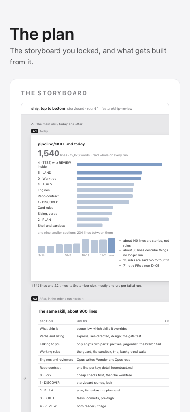
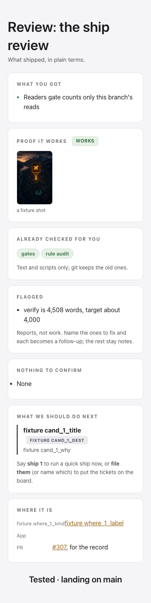

Each rule said once. The /ship skill went from 1,540 lines to 824, in the order a run meets them. Rare cases and lessons from failed runs moved to files the skill points at when they apply.
The dead engines are gone: Codex, Astra, Fable's half of the build, quota pacing and the departure board. The board's Worker, bucket and DNS record come down after the merge, as you picked.
The build log keeps itself. It times each task and counts its test runs. A landing waits until both reviewers have read this branch and the review card is committed.
The status line counts ships waiting on you, with the oldest wait, and shows review as its own stage.
Old decisions about dead engines are marked stale, and one new call can replace several.
Testing rules split by device: phone, Mac and browser each have their own file. The checks file a run writes back to is one line per lesson, capped at 150 lines; cells-app's went from 650 lines to 150.
Seven run reports folded in: cel-298, screendrop, cel-323, cel-320, cel-325, cel-285 and cel-283.
Proof it works Works
Every self-test
16 suites green on the branch head, run in full
Rule audit
605 rules in main's text traced to the branch: 538 kept, 39 changed and 11 dropped by your picks; of 7 dropped with no decision, 5 are back and 2 stay out for a stated reason; 10 with no pointer to them now have one
Names and paths
all 30 files the text names exist; no deleted script is still called
Live logs
no stale decisions left in ship's or cells-app's log
Sandbox on
the same tests fail as on main, all for ports or temp folders

The plan card at phone width, storyboard first

The review card at phone width, every slot filled
Already checked for you
two reviewers, two labs33 findings fixedrule auditcards at 1280 and 390
Wonder found 10 and Opus 27, three of them the same. Every one is fixed but one, declined: the per-stage todo list, which the status line already shows. Half of one more stays as it was: a review logged with no counts still counts as a read, since logging it is deliberate. Nothing here touches an app, data or money; git keeps everything deleted.
Flagged
The testing skill is 4,508 words, down from 6,153; the plan aimed for about 4,000.
On a phone, the plan card shows the storyboard cropped on its right, with its open-it link. Main's card does the same.
Reports, not work. Name the ones to fix and each becomes a follow-up; the rest stay notes.
Only you
Your global instructions still carry the Fable line
"Until 2026-10-29 18:00 UTC, Fable 5.1 also builds half the tasks" in your CLAUDE.md. The window closed and ship no longer reads it; trim it when you next edit that file.
What we should do next
cells-app's qa-manager skill still calls astra.shQuick ship
The script is deleted, so any session that loads that skill hits a missing file.
Say ship 1 to run a quick ship now, or file them (or name which) to put the tickets on the board.
Where it is
Pluginnew sessions load it from the plugin cache once it's deployed after the merge